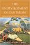
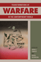

This series will disseminate serious works that analyze
the social changes that have transformed our world during the twentieth
century and beyond. The main topics to be addressed include international
migration; human rights; the political uses of history; the past
and future of the nation-state; decolonization and the legacy of
imperialism; and global inequality. The series will also translate
into English outstanding works by scholars writing in other languages. |

|
Imagined Liberation
Xenophobia, Citizenship, and Identity in South Africa, Germany, and Canada
Adam, Heribert and Kogila Moodley
246 pp • 6x9 • Spring 2015
paper 978-1-4399-1190-7
cloth 978-1-4399-1189-1 |

|
Seeking
Mandela
Peacemaking Between Israelis and Palestinians
Adam, Heribert and Kogila Moodley 248 pp •
6x9 • Spring 2005
paper 978-1-59213-396-3
cloth 978-1-59213-395-6
Excerpt available |

|
The
Nazi Census
Identification and Control in the Third Reich
Aly, Götz and Karl Heinz Roth, foreword by Edwin Black, translated
by Assenka Oksiloff 192 pp • 5.5x8.25
• Spring 2004
paper 978-1-59213-259-1
cloth 978-1-59213-199-0
Excerpt available |

|
The Borders of Justice
edited by Balibar, Étienne, Sandro Mezzadra and Ranabir Samaddar224 pp • 6x9 • Fall 2011
paper 978-1-4399-0686-6
cloth 978-1-4399-0685-9
Excerpt available |

|
Resentment's Virtue
Jean Améry and the Refusal to Forgive
Brudholm, Thomas, foreword by Jeffrie Murphy 256 pp • 6x9
• Fall 2007
paper 978-1-59213-567-7
cloth 978-1-59213-566-0
Excerpt available |

|
From
Black Power to Hip Hop
Racism, Nationalism, and Feminism
Collins, Patricia Hill
256 pp • 6x9 • Fall 2005
paper 978-1-59213-092-4
cloth 978-1-59213-091-7
Excerpt available |

|
The Undevelopment of Capitalism
Sectors and Markets in Fifteenth-Century Tuscany
Emigh, Rebecca Jean
288 pp • 6x9 • Spring 2008
paper 978-1-59213-619-3
cloth 978-1-59213-618-6
Excerpt available |

|
Revolutionary
Passage
From Soviet to Post-Soviet Russia, 1985-2000
Garcelon, Marc 328 pp • 6x9 • Spring
2005
paper 978-1-59213-362-8
cloth 978-1-59213-361-1
Excerpt available |

|
The Protestant Ethic Revisited
Gorski, Philip S.
342 pp • 6x9 • Fall 2011
paper 978-1-4399-0190-8
cloth 978-1-4399-0189-2
Excerpt available |

|
Nearest East
American Millennialism and Mission to the Middle East
Kieser, Hans-Lukas
224 pp • 6x9 • Spring 2010
paper 978-1-4399-0223-3
cloth 978-1-4399-0222-6
Excerpt available |

|
Art, Politics, and Development
How Linear Perspective Shaped Policies in the Western World
Lepenies, Philipp H.
214 pp • 6x9 • Fall 2013
cloth 978-1-4399-1084-9 |

|
The
Holocaust and Memory in the Global Age
Levy, Daniel and Natan Sznaider, translated by Assenka Oksiloff
240 pp • 5.5x8.25 • Fall 2005
paper 978-1-59213-276-8
cloth 978-1-59213-275-1
Excerpt available |
|
Sportista
Female Fandom in the United States
Markovits, Andrei S. and Emily Albertson
268 pp • 6x9 • Fall 2012
paper 978-1-4399-0964-5
cloth 978-1-4399-0963-8
Excerpt available |

|
The
Unwanted
European Refugees from the First World War Through the Cold War
Marrus, Michael R., foreword by Aristide R. Zolberg 432
pp • 6x9 • Spring 2002
paper 978-1-56639-955-5
Excerpt available |

|
The Identity Dilemma
Social Movements and Collective Identity
edited by McGarry, Aidan and James M. Jasper
238 pp • 6x9 • Spring 2015
paper 978-1-4399-1252-1
cloth 978-1-4399-1251-5 |
 |
Four Germanys
A Chronicle of the Schorcht Family
Pitkin, Donald S. 312 pp • 6x9 • Fall 2016
paper 978-1-4399-1343-7
cloth 978-0-87722-468-6 |

|
Teaching Marianne and Uncle Sam
Public Education, State Centralization, and Teacher Unionism in France and the United States
Toloudis, Nicholas
230 pp • 6x9 • Fall 2012
cloth 978-1-43990-906-5
Excerpt available |
 |
Transformations of Warfare in the Contemporary World
Edited by Torpey, John and David Jacobson
192 pp • 5.5x8.25 • Spring 2016
paper 978-1-4399-1313-0
cloth 978-1-4399-1312-3 |

|
Workers of the World, Enjoy!
Aesthetic Politics from Revolutionary Syndicalism to the Global Justice Movement
Tucker Jr., Kenneth H.
224 pp • 5.5x8.25 • Spring 2010
paper 978-1-59213-765-7
cloth 978-1-59213-764-0
Excerpt available
|

|
Unchopping a Tree
Verdeja, Ernesto
240 pp • 5.5x8.25 • Fall 2009
cloth 978-1-4399-0054-3
Excerpt available
|

|
The
Uncertainties of Knowledge
Wallerstein, Immanuel 224 pp • 5.5x8.25
• Spring 2004
paper 978-1-59213-243-0
cloth 978-1-59213-242-3
Excerpt available |

|
Sins
of the Parents
The Politics of National Apologies in the United States
Weiner, Brian A. 256 pp • 5.5x8.25 •
Spring 2005
paper 978-1-59213-318-5
cloth 978-1-59213-317-8
Excerpt available |

|
How Many Exceptionalisms?
Explorations in Comparative Macroanalysis
Zolberg, Aristide R. 376 pp • 6x9 • Spring 2008
paper 978-1-59213-832-6
cloth 978-1-59213-831-9
Excerpt available |